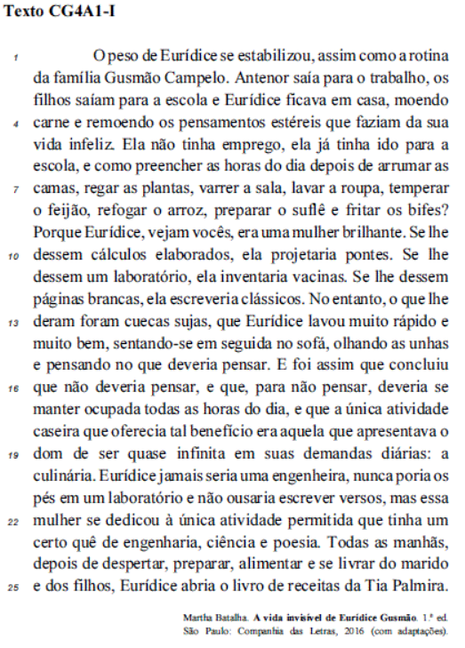

Parabéns, você acertou!!!
Gabarito oficial "c"
Em I, a substituição por vírgula manteria o sentido e a correção gramatica. No item II – não há relação de sentido entre o vocábulo “estéreis”, que significa “inútil/improdutivo e “desnecessários”, que significa supérfluos/ dispensáveis. No item III, não estaria correto o emprego da vírgula antes da conjunção aditiva “e”, visto que o sujeito da oração aditiva é o mesmo das anteriores.
Conheça um pouco mais sobre a obra que é tema da questão nessa super resenha sobre o livro A vida invisível de Eurídice Gusmão, de Martha Batalha.
Questão 1/10:

I. Os dois-pontos imediatamente após “diárias” (R.19) fossem substituídos por uma vírgula.
II. O vocábulo estéreis (R.4) fosse substituído por desnecessários.
III. Se inserisse, no trecho “nunca poria os pés em um laboratório e não ousaria escrever versos” (R.20 e 21), uma vírgula após “laboratório” e o vocábulo “não” fosse substituído por nem.
Assinale a opção correta:
(a) Nenhum item está certo.
(b) Apenas o item II está certo.
(c) Apenas o item I está certo.
(d) Apenas o item III está certo.
(e) Todos os itens estão certos.